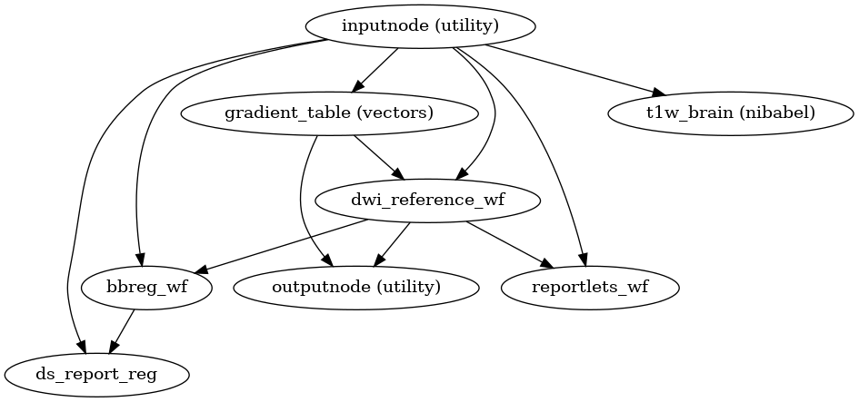

dmriprep.workflows.dwi.base module¶
Orchestrating the dMRI-preprocessing workflow.
-
dmriprep.workflows.dwi.base.init_dwi_preproc_wf(dwi_file, has_fieldmap=False)¶ Build a preprocessing workflow for one DWI run.
- Workflow Graph
- 
(Source code, png, svg, pdf)
- Parameters
dwi_file (
os.PathLike) – One diffusion MRI dataset to be processed.has_fieldmap (
bool) – Build the workflow with a path to register a fieldmap to the DWI.
- Inputs
dwi_file – dwi NIfTI file
in_bvec – File path of the b-vectors
in_bval – File path of the b-values
fmap – File path of the fieldmap
fmap_ref – File path of the fieldmap reference
fmap_coeff – File path of the fieldmap coefficients
fmap_mask – File path of the fieldmap mask
fmap_id – The BIDS modality label of the fieldmap being used
- Outputs
dwi_reference – A 3D \(b = 0\) reference, before susceptibility distortion correction.
dwi_mask – A 3D, binary mask of the
dwi_referenceabove.gradients_rasb – A RASb (RAS+ coordinates, scaled b-values, normalized b-vectors, BIDS-compatible) gradient table.
{kind=link}
{kind=link}